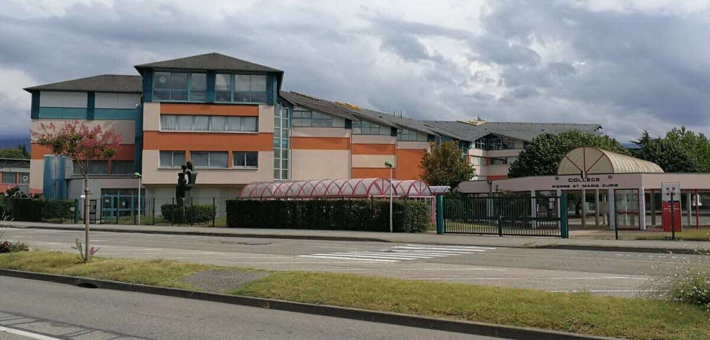
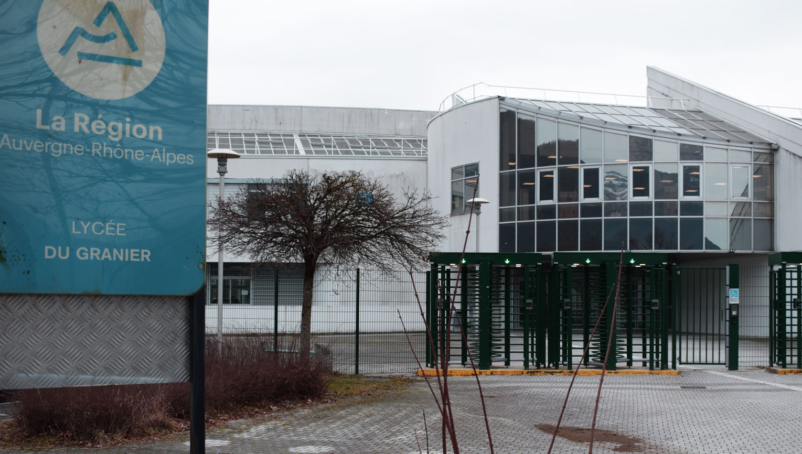
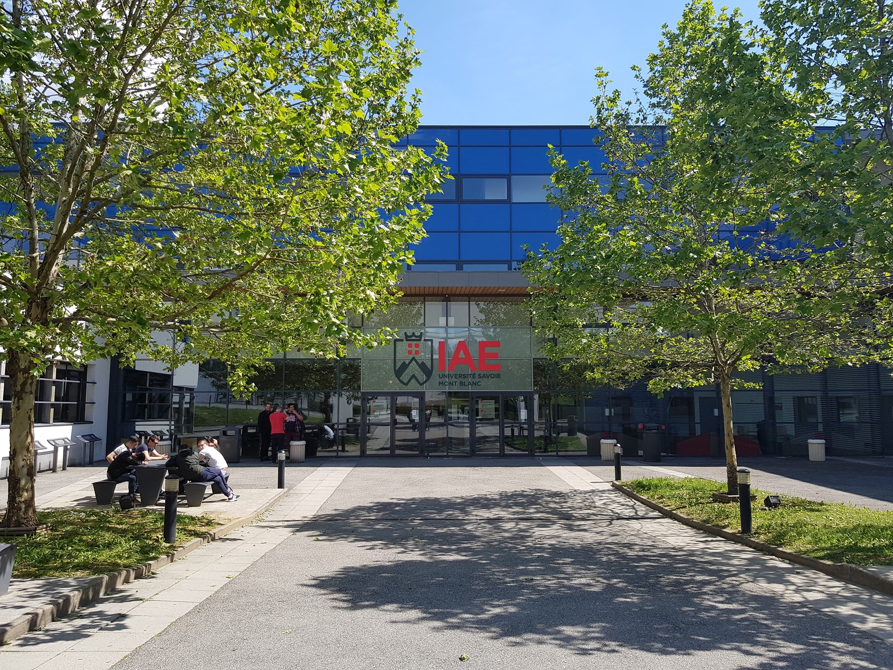

Présentation de mon parcours scolaire
Je m'appelle Antoine Basso, étudiant passionné par l'informatique et la gestion de projet. Actuellement, je poursuis mes études à l'IAE Savoie Mont Blanc, où je me spécialise en économie-gestion avec un parcours en informatique numérique.
Mon parcours scolaire a débuté au collège, où j'ai acquis des bases solides en mathématiques, sciences et langues. J'ai ensuite poursuivi mes études au lycée, me spécialisant en sciences et technologies. Depuis 2022, je suis étudiant en licence à l'IAE Savoie Mont Blanc, où je développe mes compétences en informatique et en gestion de projet.
Je suis déterminé à contribuer à des projets innovants et à évoluer professionnellement dans le domaine de l'informatique et de la gestion de projet.
Collège Pierre et Marie Curie
J'ai étudié au collège de 2015 à 2019, où j'ai acquis des bases solides en mathématiques, sciences et langues.
Lycée du Granier
De 2019 à 2022, j'ai poursuivi mes études au lycée, me spécialisant en sciences et technologies.
IAE Annecy
Depuis 2022, je suis étudiant en licence économie-gestion parcours informatique numérique à l'IAE Savoie Mont-Blanc.
Master
De 2025 à 2027, je prévois de poursuivre un master en informatique pour approfondir mes connaissances et compétences dans ce domaine.